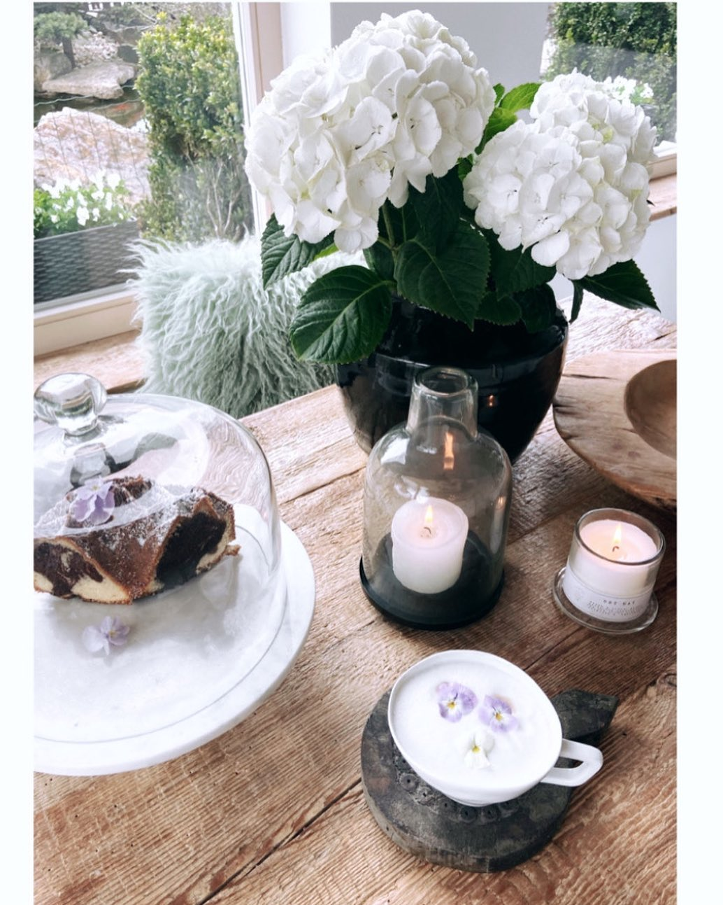

Mramorová bábovka — Normy Jedál
Mramorová bábovka ke ☕️ patří taková ta nedělní klasika. Pečete bábovky a jaké nejraději ? U nás vede banánová s pistáciemi, ale tahle je tak neskutečně výborná a vláčná recept od Barunky @mamapecedoma ♡︎
•
•
•
#babovka #mramorovababovka #nedelniklasika #milujemebabovky #cake #cakelover #cakelove #baking #bakingtime #bakinglove #home #coffee #coffeetime #coffeelover